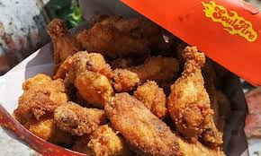

CHICKEN LICKEN
Chicken Licken is a South African fast-food fried chicken restaurant chain.[4] The company had a 5% share of South Africa's fast food market in 2010, tying with McDonald's.[5] According to a case study published by the Henny Penny Corporation in 2011, Chicken Licken is the "largest non-American-owned fried chicken franchise in the world".
WHERE WILL YOU FIND THE STORE
You will find this restaurant next to entrance 3.